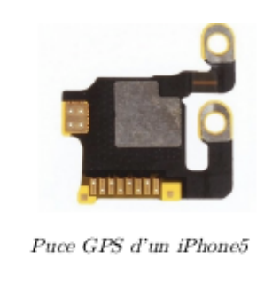
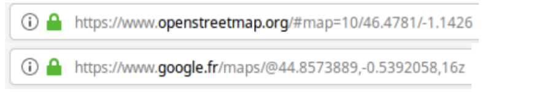

Transmission des coordonnées : trames NMEA#
Préambule#
Les différents composants d’un appareil électronique (un téléphone mobile par exemple) communiquent par des protocoles normalisés.
Ainsi, les puces GPS qui effectuent les calculs de positionnement envoient leurs résultats présentés suivant une trame normalisée : la trame NMEA.
Le développeur d’une application souhaitant utiliser la position de l’utilisateur sait qu’il pourra exploiter cette trame pour en déduire les renseignements sur la position.

Activité#
Travail préparatoire#
Vous pouvez télécharger l'application :
- pour ceux qui ont Android : NMEA Tools ou GPS Nmea Lite ;
- pour ceux qui ont iOS : NMEA Gps.
- pour ceux qui ne veulent pas télécharger d'application, consulter le site https://nmeagen.org/.
Ces applications permettent d’afficher les trames NMEA que génère la puce GPS du téléphone.
On voit ainsi que les trames sont d’abord incomplètes (elles ne contiennent pas les coordonnées), puis deviennent complètes dès que les signaux de 4 satellites ont été analysés.
Documents#
Tous les smartphones commercialisés ces dernières années sont dotés d’une puce GPS et c’est grâce à celle-ci que votre téléphone peut être géolocalisé, c’est-à-dire que vous pouvez connaître sa position géographique
L’objectif de cette activité est d’appréhender le fonctionnement de ce dispositif.
Documents 1 : la norme NMEA 0183
Il existe plus d’une trentaine de trames GPS différentes. Le type d’équipement est défini par les deux caractères qui suivent le $.
Par exemple : \(\$GPGGA,064036.289,4836.5375,N,00740.9373,E,1,04,3.2,200.2,M„ „0000*0E\)
est une trame GPS de type GGA.
Les deux premiers caractères après le signe $ (talker id) identifient l’origine du signal. Les principaux préfixes sont :
- BD ou GB - Beidou ;
- GA - Galileo ;
- GP - GPS ;
- GL - GLONASS.
Documents 2 : la trame GGA
La trame GGA est très courante car elle fait partie de celles qui sont utilisées pour connaître la position courante du récepteur GPS. Dans l’exemple suivant :
$GPGGA,064036.289,4836.5375,N,00740.9373,E,1,04,3.2,200.2,M„ „0000*0E Nous disposons de :
- $GPGGA : Type de trame ;
- 064036.289 : Trame envoyée à 06h 40m 36,289s (heure UTC) ;
- 4836.5375, N : Latitude Nord : 48°36.5375’ (DM) = 48,608958° (DD) = 48°36’32.25" (DMS) ;
- 00740.9373,E : Longitude Est : 7°40.9373’(DM)= 7,682288° (DD) = 7°40’56.238" (DMS) ;
- 1 : Type de positionnement (le 1 est un positionnement GPS) ;
- 04 : Nombre de satellites utilisés pour calculer les coordonnées ;
- 3.2 : Précision horizontale ou HDOP (Horizontal dilution of precision)
- 200.2,M : Altitude 200,2, en mètres ;
- „ „,0000 : D’autres informations peuvent être inscrites dans ces champs
- 0E : Somme de contrôle de parité, un simple XOR sur les caractères entre $ et 3
Source : d’après https://fr.wikipedia.org/wiki/NMEA_0183
Document 3 : les notations DMS, DM et DD
Les coordonnées géographiques sont traditionnellement exprimées dans le système sexagésimal, parfois noté « DMS » : degrés ( ° ) minutes (') secondes ("). L’unité de base est le degré d’angle (1 tour complet = 360°), puis la minute d’angle (1° = 60'), puis la seconde d’angle (1° = 3600").
Ces distances correspondant à un écart de longitude (en degré, minute ou seconde), varient selon la latitude du lieu, puisque les méridiens terrestres se rapprochent progressivement depuis l’équateur vers les pôles. Le tableau ci-dessous en donne quelques exemples illustratifs :
| Latitude | Ville | Degré | Minute | Seconde | ±0,0001 |
|---|---|---|---|---|---|
| 59°56’02” | Saint-Pétersbourg | 55,80 km | 0,930 km | 15,50 m | 5,58 m |
| 51° 28’ 38" N | Greenwich | 69,47 km | 1,158 km | 19,30 m | 6,95 m |
| 44° 500 1600 | Bordeaux | 78,85 km | 1,31 km | 21,90 m | 7,89 m |
| 29° 580 | Nouvelle-orléans | 96,49 km | 1,61 km | 26,80 m | 9,65 m |
| 0°15’00” | Quito | 111,3 km | 1,855 km | 30,92 m | 11,13 m |
De nos jours, les notations équivalentes en minutes décimales ou degrés décimaux sont également utilisées :
- DMS : Degré :Minute :Seconde (49° 30' 00" - 123° 30' 00") ;
- DM : Degré :Minute (49° 30,0' - 123° 30,0') ;
- DD : Degré décimal (49,5000° - 123,5000°), généralement avec quatre décimales.
Les sites de cartographie en ligne utilisent les DD dans leurs urls :

Questions#
1. Vérifier par un calcul que la latitude 48°36.5375’ (DM) du document correspond à 48°36’32.25" (DMS).
2. Rechercher sur internet, la définition de l’heure UTC. Quelle est la différence ()en heure) entre l’heure que nous voyons sur nos montre et l’heure UTC.
3. On donne la trame NMEA suivante, obtenue à partir d’un enregistrement sur un téléphone mobile avec l’application NMEA tool.
$GNGGA,123730.00,4850.632151,N,00221.472929,E,1,12,0.9,24.0,M
a. A quelle heure UTC ce relevé a-t-il été effectué ? b. Combien de satellites ont été utilisés pour cette mesure ? c. Déduire les coordonnées géographiques, en degré décimaux, de la trame enregistrée. d. Vérifier la position sur le site https://www.geoportail.gouv.fr/. Où ce relevé a-t-il été effectué ?
4. Grâce à l’application NMEA tools,à l’endroit que vous désirez, déterminer une trame NMEA GGA.
a. Écrire la trame lue ; b. En déduire l’heure,la longitude et la latitude (DM). c. Convertir ces deux dernières données en degré décimaux.